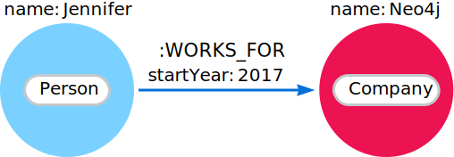
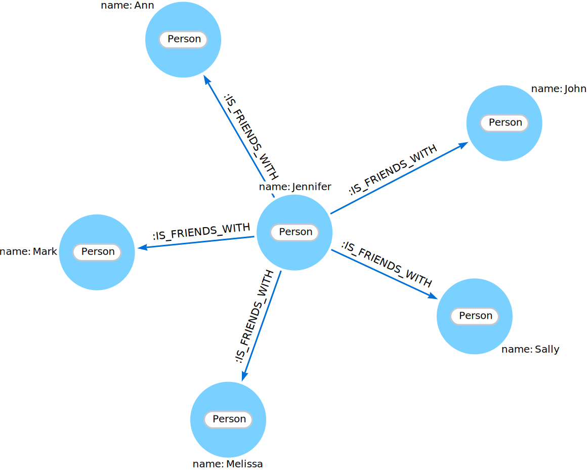

Getting the correct results
Example graphs
In this section, two example datasets are used. The first graph is based on the Movie database. The following code block helps you to create the data for exploring Cypher® queries:
CREATE (matrix:Movie {title: 'The Matrix', released: 1997})
CREATE (cloudAtlas:Movie {title: 'Cloud Atlas', released: 2012})
CREATE (forrestGump:Movie {title: 'Forrest Gump', released: 1994})
CREATE (keanu:Person {name: 'Keanu Reeves', born: 1964})
CREATE (robert:Person {name: 'Robert Zemeckis', born: 1951})
CREATE (tom:Person {name: 'Tom Hanks', born: 1956})
CREATE (tom)-[:ACTED_IN {roles: ['Forrest']}]->(forrestGump)
CREATE (tom)-[:ACTED_IN {roles: ['Zachry']}]->(cloudAtlas)
CREATE (robert)-[:DIRECTED]->(forrestGump)This is the resulting graph:
The second dataset is a small network of people, companies they work for, and technologies they like. You can find its image in the following chapter.
Filtering results
So far you have matched patterns in the graph and always returned all results you found.
Now let’s look into options for filtering the results and only return the subset of data that you are interested in.
Those filter conditions are expressed using the WHERE clause.
This clause allows to use any number of boolean expressions, predicates, combined with AND, OR, XOR and NOT.
The simplest predicates are comparisons; especially equality.
MATCH (m:Movie)
WHERE m.title = 'The Matrix'
RETURN mRows: 1
+------------------------------------------------+
| m |
+------------------------------------------------+
| (:Movie {title: 'The Matrix', released: 1997}) |
+------------------------------------------------+
|
The query above, using the Cypher is designed to be flexible, so there is often more than one way to write a query. |
Other options are numeric comparisons, matching regular expressions, and checking the existence of values within a list.
The WHERE clause in the following example includes a regular expression match, a greater-than comparison, and a test to see if a value exists in a list:
MATCH (p:Person)-[r:ACTED_IN]->(m:Movie)
WHERE p.name =~ 'K.+' OR m.released > 2000 OR 'Neo' IN r.roles
RETURN p, r, mBased on the given logical operator OR and the graph pattern (p:Person)-[r:ACTED_IN]→(m:Movie), the query result has to meet one of the following requirements:
-
The person’s
namestarts with the letter'K'. -
The movie was released after the year
2000. -
The role is
'Neo'.
In our case, only the second condition matches the graph pattern (p:Person)-[r:ACTED_IN]→(m:Movie), therefore the output is the following:
Rows: 1
+-------------------------------------------------------------------------------------------------------------------------------+
| p | r | m |
+-------------------------------------------------------------------------------------------------------------------------------+
| (:Person {name: 'Tom Hanks', born: 1956}) | [:ACTED_IN {roles: ['Zachry']}] | (:Movie {title: 'Cloud Atlas', released: 2012}) |
+-------------------------------------------------------------------------------------------------------------------------------+
An advanced aspect is that patterns can be used as predicates.
Where MATCH expands the number and shape of patterns matched, a pattern predicate restricts the current result set.
It only allows the paths to pass that satisfy the specified pattern.
As you can expect, the use of NOT only allows the paths to pass that do not satisfy the specified pattern.
MATCH (p:Person)-[:ACTED_IN]->(m)
WHERE NOT (p)-[:DIRECTED]->()
RETURN p, mRows: 2
+----------------------------------------------------------------------------------------------+
| p | m |
+----------------------------------------------------------------------------------------------+
| (:Person {name: 'Tom Hanks', born: 1956}) | (:Movie {title: 'Cloud Atlas', released: 2012}) |
| (:Person {name: 'Tom Hanks', born: 1956}) | (:Movie {title: 'Forrest Gump', released: 1994}) |
+----------------------------------------------------------------------------------------------+
Here you are able to find actors because they sport an ACTED_IN relationship but then skip those that ever DIRECTED any movie.
There are more advanced ways of filtering, for example list predicates, which will be discussed later in this section.
Querying ranges of values
There are frequent queries where you want to look for data within a certain range. Date or number ranges can be used to check for events within a certain timeline, age values, or other uses.
The syntax for this criteria is very similar to SQL and other programming language logic structures for checking ranges of values.
The following dataset is used to demonstrate the Cypher queries for these cases.
To reproduce the dataset, run the following Cypher query:
CREATE (diana:Person {name: "Diana"})
CREATE (melissa:Person {name: "Melissa", twitter: "@melissa"})
CREATE (dan:Person {name: "Dan", twitter: "@dan", yearsExperience: 6})
CREATE (sally:Person {name: "Sally", yearsExperience: 4})
CREATE (john:Person {name: "John", yearsExperience: 5})
CREATE (jennifer:Person {name: "Jennifer", twitter: "@jennifer", yearsExperience: 5})
CREATE (joe:Person {name: "Joe"})
CREATE (mark:Person {name: "Mark", twitter: "@mark"})
CREATE (ann:Person {name: "Ann"})
CREATE (xyz:Company {name: "XYZ"})
CREATE (x:Company {name: "Company X"})
CREATE (a:Company {name: "Company A"})
CREATE (Neo4j:Company {name: "Neo4j"})
CREATE (abc:Company {name: "ABC"})
CREATE (query:Technology {type: "Query Languages"})
CREATE (etl:Technology {type: "Data ETL"})
CREATE (integrations:Technology {type: "Integrations"})
CREATE (graphs:Technology {type: "Graphs"})
CREATE (dev:Technology {type: "Application Development"})
CREATE (java:Technology {type: "Java"})
CREATE (diana)-[:LIKES]->(query)
CREATE (melissa)-[:LIKES]->(query)
CREATE (dan)-[:LIKES]->(etl)<-[:LIKES]-(melissa)
CREATE (xyz)<-[:WORKS_FOR]-(sally)-[:LIKES]->(integrations)<-[:LIKES]-(dan)
CREATE (sally)<-[:IS_FRIENDS_WITH]-(john)-[:LIKES]->(java)
CREATE (john)<-[:IS_FRIENDS_WITH]-(jennifer)-[:LIKES]->(java)
CREATE (john)-[:WORKS_FOR]->(xyz)
CREATE (sally)<-[:IS_FRIENDS_WITH]-(jennifer)-[:IS_FRIENDS_WITH]->(melissa)
CREATE (joe)-[:LIKES]->(query)
CREATE (x)<-[:WORKS_FOR]-(diana)<-[:IS_FRIENDS_WITH]-(joe)-[:IS_FRIENDS_WITH]->(mark)-[:LIKES]->(graphs)<-[:LIKES]-(jennifer)-[:WORKS_FOR {startYear: 2017}]->(Neo4j)
CREATE (ann)<-[:IS_FRIENDS_WITH]-(jennifer)-[:IS_FRIENDS_WITH]->(mark)
CREATE (john)-[:LIKES]->(dev)<-[:LIKES]-(ann)-[:IS_FRIENDS_WITH]->(dan)-[:WORKS_FOR]->(abc)
CREATE (ann)-[:WORKS_FOR]->(abc)
CREATE (a)<-[:WORKS_FOR]-(melissa)-[:LIKES]->(graphs)<-[:LIKES]-(diana)Imagine, you would like to know who possesses experience ranging from three to seven years. The code block below shows the Cypher query for this case.
MATCH (p:Person)
WHERE 3 <= p.yearsExperience <= 7
RETURN pTesting if a property exists
You may only be interested if a property exists on a node or relationship. For instance, you might want to check which customers in your system have Twitter handles, so you can show relevant content. Or, you could check if all of your employees have a start date property to verify which entities might need to be updated.
|
Remember: in Neo4j, a property only exists (is stored) if it has a value.
A |
To write this type of existence check in Neo4j v5, you need to use the IS NOT NULL predicate to only include nodes or relationships in which a property exists.
The Cypher code is written in the block below.
//Query1: find all users who have a twitter property
MATCH (p:Person)
WHERE p.twitter IS NOT NULL
RETURN p.name;
//Query2: find all WORKS_FOR relationships that have a startYear property
MATCH (p:Person)-[rel:WORKS_FOR]->(c:Company)
WHERE rel.startYear IS NOT NULL
RETURN p, rel, c;Query1 results:
Rows: 4 +------------------------+ | p.name | +------------------------+ | 'Melissa' | | 'Dan' | | 'Jennifer' | | 'Mark' | +---------- -------------+

Checking strings — partial values, fuzzy searches
Some scenarios require query syntax that matches on partial values or broad categories within a string. To do this kind of query, you need some flexibility and options for string matching and searches. Whether you are looking for a string that starts with, ends with, or includes a certain value, Cypher offers the ability to handle it performantly and easily.
There are a few keywords in Cypher used with the WHERE clause to test string property values.
The STARTS WITH keyword allows you check the value of a property that begins with the string you specify.
With the CONTAINS keyword, you can check if a specified string is part of a property value.
The ENDS_WITH keyword checks the end of the property string for the value you specify.
An example of each is in the following Cypher block.
//check if a property starts with 'M'
MATCH (p:Person)
WHERE p.name STARTS WITH 'M'
RETURN p.name;
//check if a property contains 'a'
MATCH (p:Person)
WHERE p.name CONTAINS 'a'
RETURN p.name;
//check if a property ends with 'n'
MATCH (p:Person)
WHERE p.name ENDS WITH 'n'
RETURN p.name;You can also use regular expressions to test the value of strings.
For example, you could look for all the Person nodes that share a first name or you could find all the classes with a certain department code.
Let’s look at an example.
MATCH (p:Person)
WHERE p.name =~ 'Jo.*'
RETURN p.nameRows: 2 +--------------------------------+ | p.name | +--------------------------------+ | 'John' | | 'Joe' | +--------------------------------+
Just like in SQL and other languages, you can check if a property value is a value in a list.
The IN keyword allows you to specify an array of values and validate a property’s contents against each one in the list.
Here is an example:
MATCH (p:Person)
WHERE p.yearsExperience IN [1, 5, 6]
RETURN p.name, p.yearsExperienceRows: 3 +--------------------------------+ | p.name | p.yearsExp | +--------------------------------+ | 'Jennifer' | 5 | | 'Dan' | 6 | | 'John' | 5 | +--------------------------------+
Filtering on patterns
One thing that makes graph unique is its focus on relationships. Just as you can filter queries based on node labels or properties, you can also filter results based on relationships or patterns. This allows you to test if a pattern also has a certain relationship or does not, or if another pattern exists.
The following Cypher code shows how this is done.
//Query1: find which people are friends of someone who works for Neo4j
MATCH (p:Person)-[r:IS_FRIENDS_WITH]->(friend:Person)
WHERE exists((p)-[:WORKS_FOR]->(:Company {name: 'Neo4j'}))
RETURN p, r, friend;
//Query2: find Jennifer's friends who do not work for a company
MATCH (p:Person)-[r:IS_FRIENDS_WITH]->(friend:Person)
WHERE p.name = 'Jennifer'
AND NOT exists((friend)-[:WORKS_FOR]->(:Company))
RETURN friend.name;Query1 results: 
Query2 results:
Rows: 1 +--------------------------------+ | friend.name | +--------------------------------+ | 'Mark' | +--------------------------------+
Optional patterns
There are cases where you might want to retrieve results from patterns, even if they do not match the entire pattern or all of the criteria.
This is how an outer join in SQL functions.
In Cypher, you can use an OPTIONAL MATCH pattern to try to match it, but if it doesn’t find results, those rows will return null for those values.
You can see how this would look in Cypher by querying for people whose name starts with a specific letter and who may work for a company.
//Find all people whose name starts with J and who may work for a company.
MATCH (p:Person)
WHERE p.name STARTS WITH 'J'
OPTIONAL MATCH (p)-[:WORKS_FOR]-(other:Company)
RETURN p.name, other.name;Rows: 3 +--------------------------------+ | p.name | other.name | +--------------------------------+ | 'Jennifer' | 'Neo4j' | | 'John' | 'XYZ' | | 'Joe' | null | +--------------------------------+
Notice that Joe is returned because his name starts with the letter 'J', but his company’s name is null.
That is because he does not have a WORKS_FOR relationship to a COMPANY node.
Since you used OPTIONAL MATCH, his Person node is still returned from the first match, but the second match is not found, so returns null.
|
To see the difference, try running the query without the |
More complex patterns
You are able to handle many simple graph queries even at this point. But what happens when you want to extend your patterns past a single relationship? What if you want to know who else likes graphs besides Jennifer?
We handle this functionality and many others by simply adding on to our first pattern or matching additional patterns. Let us look at a couple of examples.
//Query1: find who likes graphs besides Jennifer
MATCH (j:Person {name: 'Jennifer'})-[r:LIKES]-(graph:Technology {type: 'Graphs'})-[r2:LIKES]-(p:Person)
RETURN p.name;
//Query2: find who likes graphs besides Jennifer that she is also friends with
MATCH (j:Person {name: 'Jennifer'})-[:LIKES]->(:Technology {type: 'Graphs'})<-[:LIKES]-(p:Person),
(j)-[:IS_FRIENDS_WITH]-(p)
RETURN p.name;Query1 results:
Rows: 3 +-----------------------+ | p.name | +-----------------------+ | 'Diana' | | 'Mark' | | 'Melissa' | +-----------------------+
Query2 results:
Rows: 2 +-----------------------+ | p.name | +-----------------------+ | 'Mark' | | 'Melissa' | +-----------------------+
Notice that on the second query a comma is used after the first MATCH line and another pattern is added to match on the next line.
This allows you to chain patterns together, similar to when you used the WHERE exists(<pattern>) syntax above.
With this structure, you can add multiple different patterns and link them together, allowing you to traverse various pieces of the graph with certain patterns.
Returning results
So far, you have returned nodes, relationships, and paths directly via their variables.
However, the RETURN clause can return any number of expressions.
But what are expressions in Cypher?
The simplest expressions are literal values.
Examples of literal values are: numbers, strings, arrays (for example: [1,2,3]), and maps (for example: {name: 'Tom Hanks', born:1964, movies: ['Forrest Gump', ...], count: 13}).
Individual properties of any node, relationship or map can be accessed using the dot syntax, for example: n.name.
Individual elements or slices of arrays can be retrieved with subscripts, for example: names[0] and movies[1..-1].
Each function evaluation, for example: length(array), toInteger('12'), substring('2014-07-01', 0, 4) and coalesce(p.nickname, 'n/a'), is also an expression.
Predicates used in WHERE clauses count as boolean expressions.
Simple expressions can be composed and concatenated to form more complex expressions.
By default the expression itself is used as a label for the column, in many cases you want to alias that with a more understandable name using expression AS alias.
The alias can be used subsequently to refer to that column.
MATCH (p:Person)
RETURN
p,
p.name AS name,
toUpper(p.name),
coalesce(p.nickname, 'n/a') AS nickname,
{name: p.name, label: head(labels(p))} AS personRows: 3
+-------------------------------------------------------------------------------------------------------------------------------------------------+
| p | name | toUpper(p.name) | nickname | person |
+-------------------------------------------------------------------------------------------------------------------------------------------------+
| (:Person {name: 'Keanu Reeves', born: 1964}) | 'Keanu Reeves' | 'KEANU REEVES' | 'n/a' | {name: 'Keanu Reeves', label: 'Person'} |
| (:Person {name: 'Robert Zemeckis', born: 1951}) | 'Robert Zemeckis' | 'ROBERT ZEMECKIS' | 'n/a' | {name: 'Robert Zemeckis', label: 'Person'} |
| (:Person {name: 'Tom Hanks', born: 1956}) | 'Tom Hanks' | 'TOM HANKS' | 'n/a' | {name: 'Tom Hanks', label: 'Person'} |
+-------------------------------------------------------------------------------------------------------------------------------------------------+
If you wish to display only unique results you can use the DISTINCT keyword after RETURN:
MATCH (n)
RETURN DISTINCT labels(n) AS LabelsRows: 2 +------------+ | Labels | +------------+ | ['Movie'] | | ['Person'] | +------------+
Returning unique results
You can return unique results using DISTINCT keyword in Cypher. Some of your queries may return duplicate results due to multiple paths to the node or a node that meets multiple criteria.
This redundancy can clutter results and make sifting through a long list difficult to find what you need.
To trim out duplicate entities, you can use the DISTINCT keyword.
//Query: find people who have a twitter and like graphs or query languages
MATCH (user:Person)
WHERE user.twitter IS NOT null
WITH user
MATCH (user)-[:LIKES]-(t:Technology)
WHERE t.type IN ['Graphs','Query Languages']
RETURN DISTINCT user.nameQuery results:
Rows: 3 +-----------------------+ | user.name | +-----------------------+ | 'Jennifer' | | 'Melissa' | | 'Mark' | +-----------------------+
For the preceding query, the use case is that you are launching a new Twitter account for tips and tricks on Cypher, and you want to notify users who have a Twitter account and who like graphs or query languages.
The first two lines of the query look for Person nodes that have a Twitter handle.
Then, you use WITH to pass those users over to the next MATCH, where you find out if the person likes graphs or query languages.
Notice that running this statement without the DISTINCT keyword results in 'Melissa' shown twice.
This is because she likes graphs and she also likes query languages.
When DISTINCT is used, you only retrieve unique users.
Limiting number of results
There are times when you want a sampling set, or you only want to pull so many results to update or process at a time.
The LIMIT keyword takes the output of the query and limits the volume returned based on the number you specify.
For instance, you can find each person’s number of friends in our graph. If the graph were thousands or millions of nodes and relationships, the number of results returned would be massive. What if you only cared about the top three people who had the most friends? Let’s write a query for that!
//Query: find the top 3 people who have the most friends
MATCH (p:Person)-[r:IS_FRIENDS_WITH]-(other:Person)
RETURN p.name, count(other.name) AS numberOfFriends
ORDER BY numberOfFriends DESC
LIMIT 3Rows: 3 +--------------------------------+ | p.name | numberOfFriends | +--------------------------------+ | 'Jennifer' | 5 | | 'Mark' | 2 | | 'Ann' | 2 | +--------------------------------+
The query pulls persons and the friends they are connected to and returns the person name and count of their friends.
You could run just that much of the query and return a messy list of names and friend counts, but you probably want to order the list based on the number of friends each person has starting with the biggest number at the top (DESC).
You could also run that much of the query to see the friends and counts all in order, but in the example above the top three people with the most friends have been pulled from the graph.
The LIMIT pulls the top results from the ordered list.
|
Try mixing up the query by removing the |
Aggregating information
In many cases, we wish to aggregate or group the data encountered while traversing patterns in our graph.
In Cypher, aggregation happens in the RETURN clause while computing the final results.
Many common aggregation functions are supported, for example count, sum, avg, min, and max, but there are several more.
Counting the number of people in the Movie database could be achieved by this:
MATCH (:Person)
RETURN count(*) AS peopleRows: 1 +--------+ | people | +--------+ | 3 | +--------+
If you want to skip null values, use the function count(variable).
For aggregating only unique values use the DISTINCT operator, for example: count(DISTINCT role).
Aggregation works implicitly in Cypher. You specify which result columns you wish to aggregate. Cypher uses all non-aggregated columns as grouping keys.
Aggregation affects which data is still visible in ordering or later query parts.
The following statement finds out how often an actor and director have worked together:
MATCH (actor:Person)-[:ACTED_IN]->(movie:Movie)<-[:DIRECTED]-(director:Person)
RETURN actor, director, count(*) AS collaborationsRows: 1
+--------------------------------------------------------------------------------------------------------------+
| actor | director | collaborations |
+--------------------------------------------------------------------------------------------------------------+
| (:Person {name: 'Tom Hanks', born: 1956}) | (:Person {name: 'Robert Zemeckis', born: 1951}) | 1 |
+--------------------------------------------------------------------------------------------------------------+
There are three different ways to use the count() function:
-
count(*): counts results and returns the number of matching rows. -
count(n): counts the number of occurrences ofn(excludesnullvalues). You can specify nodes, relationships, or properties within the parentheses for Cypher to count. -
count(DISTINCT variable): theDISTINCToperator removes duplicates from the results.
In the dataset People, technologies, and companies, some of the Person nodes have a Twitter handle, but others do not.
If you run the first example query below, you will see that the twitter property has a value for four people and is null for the other five people.
The second and third queries show how to use the different count options.
//Query1: see the list of Twitter handle values for Person nodes
MATCH (p:Person)
RETURN p.twitter;Query1 results:
Rows: 9 +--------------+ | p.twitter | +--------------+ | '@jennifer' | | '@melissa' | | null | | '@mark' | | '@dan' | | null | | null | | null | | null | +--------------+
//Query2: count of the non-null `twitter` property of the Person nodes
MATCH (p:Person)
RETURN count(p.twitter);Query2 results:
Rows: 1 +-------------------+ | count(p.twitter) | +-------------------+ | 4 | +-------------------+
//Query3: count on the Person nodes
MATCH (p:Person)
RETURN count(*);Query3 results:
Rows: 1 +-------------------+ | count(*) | +-------------------+ | 9 | +-------------------+
Collecting aggregation
A very helpful aggregation function is collect(expression), which returns a single aggregated list of the values returned by an expression.
This is very useful in many situations, since no information of details is lost while aggregating.
collect() is well-suited for retrieving typical parent-child structures, where one core entity (parent, root, or head) is returned per row with all its dependent information in associated lists created with collect().
This means that there is no need to repeat the parent information for each child row, or running n+1 statements to retrieve the parent and its children individually.
The following statement could be used to retrieve the cast of each movie in our database:
MATCH (m:Movie)<-[:ACTED_IN]-(a:Person)
RETURN m.title AS movie, collect(a.name) AS cast, count(*) AS actorsRows: 2 +-----------------------------------------+ | movie | cast | actors | +-----------------------------------------+ | 'Forrest Gump' | ['Tom Hanks'] | 1 | | 'Cloud Atlas' | ['Tom Hanks'] | 1 | +-----------------------------------------+
The lists created by collect() can either be used from the client consuming the Cypher results or directly within a statement with any of the list functions or predicates.
Looping through list values
If you have a list that you want to inspect or separate the values, Cypher offers the UNWIND clause.
This does the opposite of collect() and separates a list into individual values on separate rows.
UNWIND is frequently used for looping through JSON and XML objects when importing data, as well as everyday arrays and other types of lists.
Let us look at a couple of examples where we assume that the technologies someone likes also mean they have some experience with each one.
If you are interested in hiring people who are familiar with Graphs or Query Languages, you can write the following query to find people to interview.
//Query1: for a list of techRequirements, look for people who have each skill
WITH ['Graphs','Query Languages'] AS techRequirements
UNWIND techRequirements AS technology
MATCH (p:Person)-[r:LIKES]-(t:Technology {type: technology})
RETURN t.type, collect(p.name) AS potentialCandidates;Query1 results:
Rows: 2 +-------------------+------------------------------------------+ | t.type | potentialCandidates | +-------------------+------------------------------------------+ | 'Graphs' | ['Diana', 'Mark', 'Melissa', 'Jennifer'] | | 'Query Languages' | ['Diana', 'Melissa', 'Joe'] | +-------------------+------------------------------------------+
//Query2: for numbers in a list, find candidates who have that many years of experience
WITH [4, 5, 6, 7] AS experienceRange
UNWIND experienceRange AS number
MATCH (p:Person)
WHERE p.yearsExp = number
RETURN p.name, p.yearsExp;Query2 results:
Rows: 4 +--------------+-----------------+ | p.name | p.yearsExp | +--------------+-----------------+ | 'Sally' | 4 | | 'Jennifer' | 5 | | 'John' | 5 | | 'Dan' | 6 | +--------------+-----------------+
Ordering and pagination
It is common to sort and paginate after aggregating using count(x).
Ordering is done using the ORDER BY expression [ASC|DESC] clause.
The expression can be any expression, as long as it is computable from the returned information.
For instance, if you return person.name you can still ORDER BY person.age since both are accessible from the person reference.
You cannot order by things that are not returned.
This is especially important with aggregation and DISTINCT return values, since both remove the visibility of data that is aggregated.
Pagination is done using the SKIP {offset} and LIMIT {count} clauses.
A common pattern is to aggregate for a count (score or frequency), order by it, and only return the top-n entries.
For instance, to find the most prolific actors you could do:
MATCH (a:Person)-[:ACTED_IN]->(m:Movie)
RETURN a, count(*) AS appearances
ORDER BY appearances DESC LIMIT 10Rows: 1
+---------------------------------------------------------+
| a | appearances |
+---------------------------------------------------------+
| (:Person {name: 'Tom Hanks', born: 1956}) | 2 |
+---------------------------------------------------------+
Ordering results
Our list of potential hiring candidates from the preceding examples might be more useful if you could order the candidates by most or least experience. Or perhaps you want to rank all of our people by age.
The ORDER BY keyword sorts the results based on the value you specify in ascending or descending order (ascending is default).
Let’s use the same queries from our examples with UNWIND and see how you can order the candidates.
//Query1: for a list of techRequirements, look for people who have each skill
WITH ['Graphs','Query Languages'] AS techRequirements
UNWIND techRequirements AS technology
MATCH (p:Person)-[r:LIKES]-(t:Technology {type: technology})
WITH t.type AS technology, p.name AS personName
ORDER BY technology, personName
RETURN technology, collect(personName) AS potentialCandidates;Query1 results:
Rows: 2 +-------------------+------------------------------------------+ | technology | potentialCandidates | +-------------------+------------------------------------------+ | 'Graphs' | ['Diana', 'Jennifer', 'Mark', 'Melissa'] | | 'Query Languages' | ['Diana', Joe] | +-------------------+------------------------------------------+
//Query2: for numbers in a list, find candidates who have that many years of experience
WITH [4, 5, 6, 7] AS experienceRange
UNWIND experienceRange AS number
MATCH (p:Person)
WHERE p.yearsExp = number
RETURN p.name, p.yearsExp ORDER BY p.yearsExp DESC;Query2 results:
Rows: 4 +--------------+-----------------+ | p.name | p.yearsExp | +--------------+-----------------+ | 'Dan' | 6 | | 'Jennifer' | 5 | | 'John' | 5 | | 'Sally' | 4 | +--------------+-----------------+
Notice that the first query has to order by Person name before collecting the values into a list.
If you do not sort first (put the ORDER BY after the RETURN clause), you will sort based on the size of the list and not by the first letter of the values in the list.
The results are also sorted into two values: technology, then a person.
This allows you to sort the technology so that all the persons that like a technology are listed together.
You can try out the difference in sorting by both values or one value by running the following queries:
//only sorted by person's name in alphabetical order
WITH ['Graphs','Query Languages'] AS techRequirements
UNWIND techRequirements AS technology
MATCH (p:Person)-[r:LIKES]-(t:Technology {type: technology})
WITH t.type AS technology, p.name AS personName
ORDER BY personName
RETURN technology, personName;//only sorted by technology (person names are out of order)
WITH ['Graphs','Query Languages'] AS techRequirements
UNWIND techRequirements AS technology
MATCH (p:Person)-[r:LIKES]-(t:Technology {type: technology})
WITH t.type AS technology, p.name AS personName
ORDER BY technology
RETURN technology, personName;//sorted by technology, then by person's name
WITH ['Graphs','Query Languages'] AS techRequirements
UNWIND techRequirements AS technology
MATCH (p:Person)-[r:LIKES]-(t:Technology {type: technology})
WITH t.type AS technology, p.name AS personName
ORDER BY technology, personName
RETURN technology, personName;Counting values in a list
If you have a list of values, you can also find the number of items in that list or calculate the size of an expression using the size() function.
The example below return the number of items found.
//Query1: find number of items in collected list
MATCH (p:Person)-[:IS_FRIENDS_WITH]->(friend:Person)
RETURN p.name, size(collect(friend.name)) AS numberOfFriends;Query1 results:
Rows: 4 +--------------+-----------------+ | p.name | numberOfFriends | +--------------+-----------------+ | 'John' | 1 | | 'Jennifer' | 5 | | 'Ann' | 1 | | 'Joe' | 2 | +--------------+-----------------+
In Neo4j v5, if you need to find a number of relationship patterns, use the COUNT {} expression.
Take a look at the following example of the Cypher query.
//Query2: find number of friends who have other friends
MATCH (p:Person)-[:IS_FRIENDS_WITH]->(friend:Person)
WHERE count{(friend)-[:IS_FRIENDS_WITH]-(:Person)} > 1
RETURN p.name, collect(friend.name) AS friends, count{(friend)-[:IS_FRIENDS_WITH]-(:Person)} AS numberOfFoFs;Query2 results:
Rows: 3 +--------------+----------------------------------+---------------+ | p.name | friends | numberOfFofs | +--------------+----------------------------------+---------------+ | 'Joe' | ['Mark'] | 2 | | 'Jennifer' | ['Mark', 'John', 'Sally', 'Ann'] | 2 | | 'John' | ['Sally'] | 2 | +--------------+----------------------------------+---------------+
Was this page helpful?